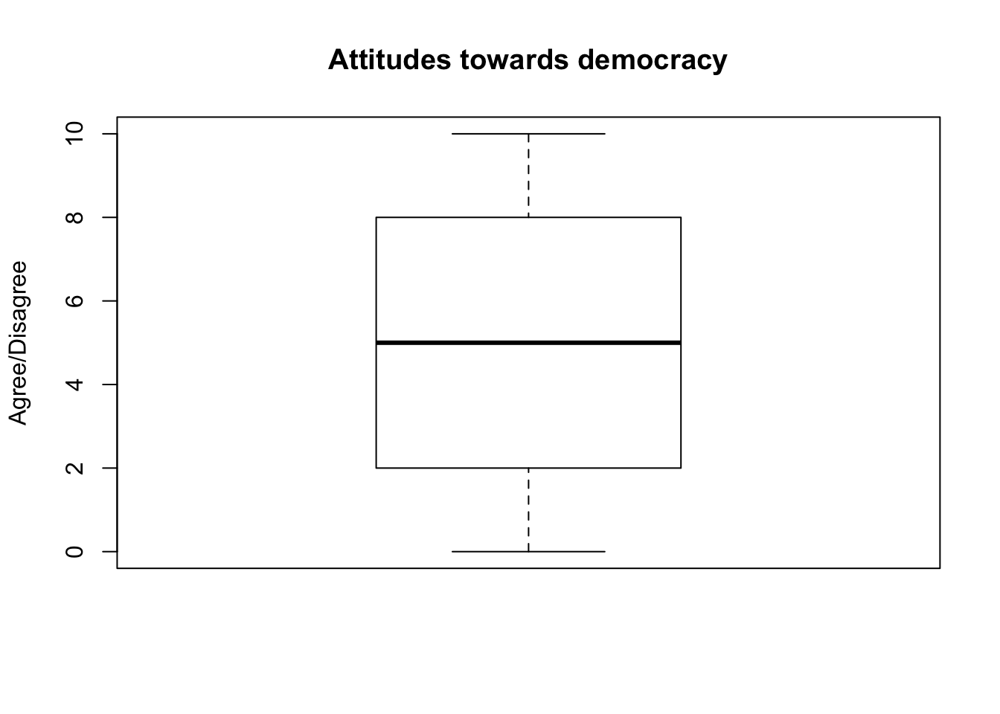
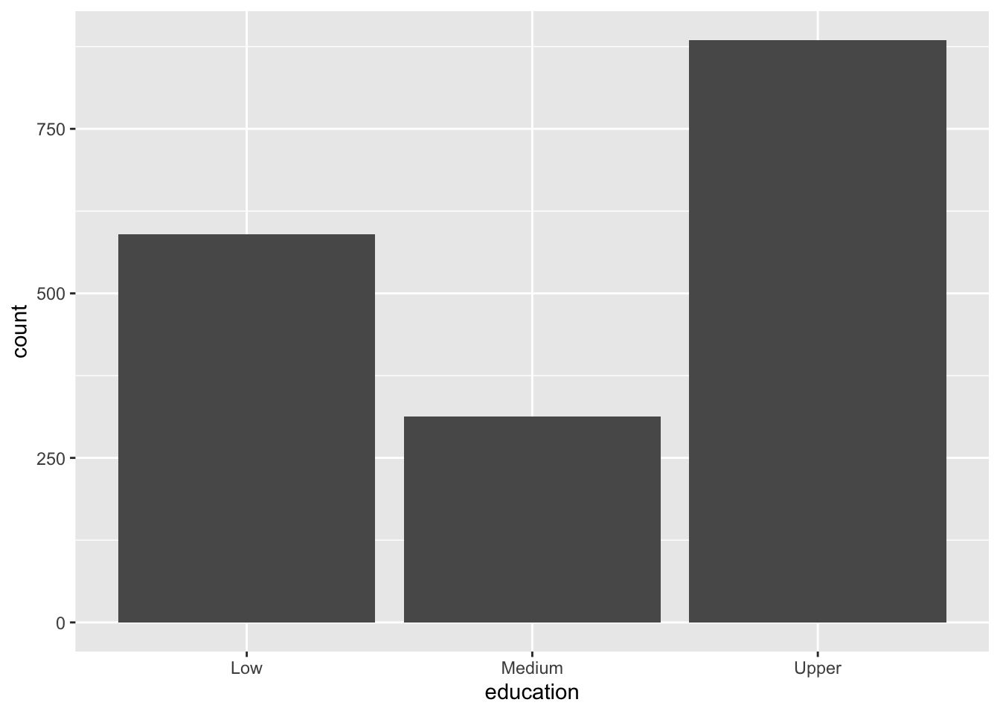

Measures of Central Tendency
Where to find data
When we are starting a new research project, quite often we assume that we need to collect data. However, this is not always the case. Actually, there are many good quality datasets available to use. Most surveys are designed by very experienced researchers and cover a wide range of topics.
For example, GESIS-Leibniz Institute of the Social Sciences,houses almost all comparative and German social surveys in Europe. Almost all European countries have a data archive. In the UK we have the UK Data Archive, the UKDA is the national data archive. Additionally, the World Bank and Eurostat, the statistical office of the European Union, provide a wide range of statistics, such as the GDP per Capita, inflation, unemployment, etc.
To download data you need to register first, this is easy to do, you only need an email address. Once you register you may download any dataset you are interested in, for free.
In our module we will use the European Value Study (EVS). EVS, provides insights into the ideas, beliefs, preferences, attitudes, values and opinions of citizens all over Europe. The European Values Study covers a wide range of human values. The main topics covered concern concepts such as family, work, environment, perceptions of life, politics and society, religion and morality, national identity.
You may download the dataset from our module’s website on SurreyLearn.
How to load data in RStudio
As you may have already noticed by visiting GESIS and the UKDA, data comes in many different formats, some examples are comma-separated values files (.csv), SPSS files (.spss), STATA files (.dta), excel files (.xls). In RStudio you may upload all datasets mentioned above, but R’s native file format is .RData. To load an RData file you should use a function called load().
In SurreyLearn you will find the codebook and the questionnaire of the dataset. Codebooks provide a detailed description of the dataset, such as the name and the code for each variable.
To upload a dataset that is not stored in R’s native file format we will need to install an additional package.
R packages are like apps, we install them in order to use additional features available in R. To load packages that are foreign to R’s native language we should use a package called haven(). To do so we use the function called install.packages(). In the brackets we include the name of the package we would like to install in quotation marks(" ").
To do so we type: install.packages("haven")
Once the package is installed we may ask RStudio to use it by calling the function library(). For example, in order to use the haven package we type library(haven).
library(haven)Alternatively, you may install any package you need by clicking on the Packages tab in the bottom right pane and then click install. A dialog box will appear. In the install Packages dialog write the name of the package you want to install and click install. This will install the package you are looking for.

Install packages
Descriptive Statistics
Let’s start by creating a folder dedicated to our module. On your computer go to My Documents and create a new folder entitled POL2045. Go back to SurreyLearn and download the dataset in the folder. Go back to RStudio, create a new script file, name it Lab2.R.
The first two lines of your script file should include the following three lines.
rm(list = ls()) # This command will clean your workspace
setwd("~/POL2045") # This command will tell RStudio to read and save files at the folder POL2045
load("EVS_UK.RData")We can now start exploring our data. We can look the names of our variables with the names() function.
names(EVS_UK)## [1] "year" "country" "v5" "v39"
## [5] "v48" "v49" "v102" "v103"
## [9] "v133" "v134" "v135" "v136"
## [13] "v137" "v138" "v139" "v140"
## [17] "v141" "v142" "v144" "v172"
## [21] "v173" "v174_cs" "v184" "v185"
## [25] "v186" "v187" "v188" "v198"
## [29] "v225" "v226" "age" "v243_r_weight"To see how our dataset looks like we can use the head() function
head(EVS_UK)## # A tibble: 6 x 32
## year country v5 v39 v48 v49 v102 v103
## <dbl+lbl> <dbl+lbl> <dbl+l> <dbl+lb> <dbl+l> <dbl+l> <dbl+lb> <dbl+lb>
## 1 2018 [201… 826 [Gre… 3 [not… 4 2 [agr… 4 [dis… NA 1 [ind…
## 2 2018 [201… 826 [Gre… 1 [ver… 7 4 [dis… 4 [dis… 1 [the… 10 [sta…
## 3 2018 [201… 826 [Gre… 2 [qui… 10 [sat… 1 [agr… 2 [agr… 8 9
## 4 2018 [201… 826 [Gre… 2 [qui… 8 4 [dis… 2 [agr… 4 5
## 5 2018 [201… 826 [Gre… 3 [not… 5 4 [dis… 3 [nei… 5 8
## 6 2018 [201… 826 [Gre… 2 [qui… 3 2 [agr… 2 [agr… 5 3
## # … with 24 more variables: v133 <dbl+lbl>, v134 <dbl+lbl>, v135 <dbl+lbl>,
## # v136 <dbl+lbl>, v137 <dbl+lbl>, v138 <dbl+lbl>, v139 <dbl+lbl>,
## # v140 <dbl+lbl>, v141 <dbl+lbl>, v142 <dbl+lbl>, v144 <dbl+lbl>,
## # v172 <dbl+lbl>, v173 <dbl+lbl>, v174_cs <dbl+lbl>, v184 <dbl+lbl>,
## # v185 <dbl+lbl>, v186 <dbl+lbl>, v187 <dbl+lbl>, v188 <dbl+lbl>,
## # v198 <dbl+lbl>, v225 <dbl+lbl>, v226 <dbl+lbl>, age <dbl+lbl>,
## # v243_r_weight <dbl+lbl>Let’s explore what people think about democracy
boxplot(EVS_UK$v137, main= "Attitudes towards democracy",
ylab= "Agree/Disagree")
The mean and the median
The arithmetic mean, in other words the average, is the most commonly used measure of central tendency. Even without realising it we often calculate the mean, for example we use the mean to calculate how much energy we are using per month.
We all know how to calculate the mean, by diving the sum of all observations by the total number of observations. Let’s try to do that in R. First, we need to calculate the sum of all observations. We can do that in R by using the sum() function:
sum(EVS_UK$v198,na.rm=TRUE) # na.rm deletes all cases with missing values before calculating the variance## [1] 11643the next step will be to divide by the total number of all observation. We do so by using the length() function:
length(EVS_UK$v198)## [1] 1788Since our overall goal is to calculate the mean we could do so by dividing the sum of all observations by the total number of observations:
sum(EVS_UK$v198,na.rm=TRUE) / length(EVS_UK$v198)## [1] 6.511745As you may already know by now R has some build-in (base) functions that are there to make everything easier for us. In this case, when you want to calculate the mean you simply use the mean() function. Additionally, you may calculate the median by using the median () function.
Additional trainingCalculate the mean and the median for the variables describing attitudes towards immigration
using the function described above.The Mode
In contrast to the other two measures of central tendency we don’t need a build-in function to calculate the mode. Simply because it is very easy to do it on our own. Think what the mode is…
To find the value that appears most often, all we have to do is to tabulate the variable we are interested in. This is easily done with the table() function.
dem_mode<-table(EVS_UK$v142)
dem_mode##
## 1 2 3 4 5 6 7 8 9 10
## 24 8 11 15 90 66 84 212 223 1031In simple words the table() function creates a table that tell us the number of people (cases) that fall into each category. For example, 11 responders place themselves at number 3. In this case the mode is 10, because it is the response that occurs more often, 1031 times.
This approach, is practical only when our variable has a small number of values, when our variable consists of a long list of numbers then we need a slightly more sophisticated approach. Let’s see that step by step. Our first step is to sort our variable ranging from the largest to the smallest value. This way the first value is our mode!
data_sort<- sort(dem_mode, decreasing=TRUE)
data_sort##
## 10 9 8 5 7 6 1 4 3 2
## 1031 223 212 90 84 66 24 15 11 8Measures of dispersion
The range of a variable is the simplest and easy measure of dispersion we can calculate, but at the same time is the less reliable one, this is because it depends only upon two values- the two extremes- that quite often are also outliers - they are far away from the centre of the distribution.
The variance is a measure that takes into consideration how far is each value from the mean. To calculate the variance we have to take into account that negative values might cancel out the positive ones, the mathematical trick to overcome this issue is to square the deviations from the mean. For example if the deviation from the mean is equal to \(-3\) the squared deviation is equal to \(9\). The downside of this approach is that the variance is reporting the squared deviation from the mean, in other words not in the same units as the observed variable, and thus the interpretation is sometimes difficult. But, the variance has some very important uses!
To calculate the variance in RStudio we use the var() function.
table(EVS_UK$v142)##
## 1 2 3 4 5 6 7 8 9 10
## 24 8 11 15 90 66 84 212 223 1031var(EVS_UK$v142,na.rm=TRUE) # na.rm deletes all cases with missing values before calculating the variance## [1] 3.552088To overcome this issue we calculate a statistical quantity called standard deviation . Think of the standard deviation as the average amount the values of a variable deviate from the mean. The greater the dispersion, the bigger the deviation and eventually the standard deviation (sd).
In R we may calculate the standard deviation by using the sd() function.
sd(EVS_UK$v142, na.rm=TRUE) ## [1] 1.884698Measures of central tendency for factor or categorical variables
Some variables, consist of named categories, e.g. the name of your favourite brand. A category-variable, or a categorical variable refers to any variable that puts individuals into categories. These variables are also called nominal variables. The word nominal comes from Latin (nominalis=of a name), because we are giving names to the values of our variable.
With categorical variables we want to understand the frequency with which each value appears in our dataset. As you already know the easiest way to do so is by producing a table. Remember the table () function. The appropriate measure of central tendency for categorical variables is the mode and/or the median.
Below we will learn some basic data manipulation for categorical variables. Starting with identifying the class() of a variable before we move to assigning a new name to variable and to the values of a categorical variable.
There are numerous data types in R. The most frequent used ones are numeric, character (string) or factor, and logical (TRUE or FALSE). To check the type of data contained in a variable we can use the class() function.
class(EVS_UK$v174_cs)## [1] "haven_labelled"To find the lenght of a character variable we use the nchar() function.
R promotes numeric variables and sometimes when you import SPSS files as RStudio is listing them as haven_labelled. If accidentally your factor variable is listed as numeric or haven_labelled, you may convert it to factor by using the as.factor() function. Let’s examine the variable describing education. The variable has a very technical name, that is why we should assign a meaningful name to the variable.
EVS_UK$education<-EVS_UK$v243_r_weight
class(EVS_UK$education)## [1] "haven_labelled"Accidentally RStudio, listed education as a haven_labelled variable. As you know, education is a classic example of a categorical variable.How can we convert a numerical variable to a factor? This is easy. Note that as the same time we will learn how to covert a variable from numeric to factor but also how to name values.
Let’s do it!
EVS_UK$education <- factor(EVS_UK$education,
levels = c(1, 2, 3),
labels = c("Low", "Medium", "Upper"))
table(EVS_UK$education)##
## Low Medium Upper
## 590 313 885Let’s examine our new factor variable with a frequency table
table(EVS_UK$education)##
## Low Medium Upper
## 590 313 885The most common graphical representation of categorical variables is bar graphs and pie charts.
library(ggplot2)
ggplot(data.frame(EVS_UK), aes(x=education)) +
geom_bar()
Additional trainingAdjust the width of the bars using the width function, change the appearance
of the axes by giving labels. Give a title to your graph.Note: RStudio Base cheatsheet